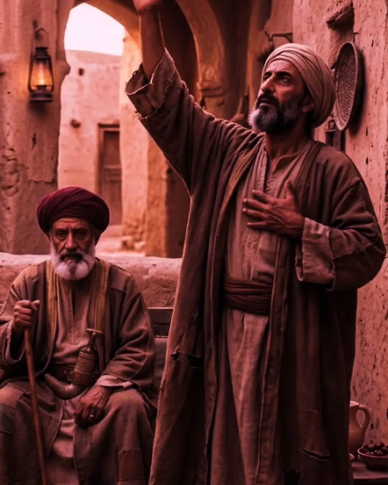

Media Professional · TV Presenter · Event Host & MC
Aziz Almalki
إعلامي ومقدّم برامج وفعاليات
I have presented social and cultural programmes on screen and hosted events in front of live audiences, and I currently lead a media and marketing team in Qatar.
Selected Works
Work I have presented on camera, from television to digital platforms.
Hadith Al-Shari
Presenter · Social TV programme
A social programme that takes people's questions and opinions straight from the street.
View projectAwtad Al-Khiyam
Presenter · Cultural TV programme
A programme on Hassaniya culture: its poetry, customs and tent life, as told by its own people.
View project
Lamrda
Co-founder & presenter · Weekly programme
A weekly programme about poetry and storytelling, revisiting the lives and stories of poets in a style close to the viewer.
View projectEvent Hosting & Master of Ceremonies
I host in front of a live audience the same way I present on camera: introducing each segment, keeping the event on pace, and connecting with the room in clear, calm Arabic. I welcome work with event organisers, conferences, festivals, and government and private organisations.
Available to host
- Conferences and forums
- Official and cultural ceremonies
- Festivals
- Panels and moderated discussions
- Corporate events and launches
- Sports and heritage occasions
What I do
Available to work with TV channels, event and production companies, cultural and sports organisations, PR and advertising agencies, and government and private organisations.
- 01TV presenting
- 02Event hosting and ceremonies
- 03Conference and forum hosting
- 04Festivals, official and cultural ceremonies
- 05Panel moderation
- 06Interviews
- 07Field reports
- 08On-camera talent for commercials and digital content
- 09Content production, filming and editing
Media & Marketing
Media & Marketing Team Lead
Sahari Group, Qatar · Since 2026
I lead the media and marketing team at Sahari Group, taking content from idea and filming through to publishing, in a specialised sector: camels and camel health.
- Advertising content
- Promotional videos
- Filmed interviews
- Digital advertising
- LED screen content
- Specialised content (veterinary, sport, heritage)
- Media and marketing planning
- Leading the media team
Career Journey
- 2022
First steps on camera
Independent presenting and content creation.
- 2023
University degree
Licence in Quran and Sunnah Studies, University of Oran 1 Ahmed Ben Bella.
- 2026
Television
Presenting Hadith Al-Shari and Awtad Al-Khiyam.
- 2026
Qatar: Sahari Group
Media & Marketing Team Lead.
Certifications & Education
- Degree
Licence in Quran and Sunnah Studies
University of Oran 1 Ahmed Ben Bella · 2023
- Training course
Digital Content Creation
BBC Media Action
About Me

I started on camera in 2022, then co-founded Lamrda, a weekly programme about poetry and storytelling.
On television I presented Hadith Al-Shari, which carries people's voices as they are, and Awtad Al-Khiyam, on Hassaniya culture. On stage, I host events in front of live audiences.
Today I work in Qatar, leading the media and marketing team at Sahari Group. I present, interview, write, film and edit, and I look for work that puts me in front of an audience, on camera and on stage.
Let's work together
For TV programmes, events, conferences, panels and content production, WhatsApp is the quickest way to reach me.
Book or collaborate
Available to work with TV channels, event and production companies, cultural and sports organisations, PR and advertising agencies, and government and private organisations.